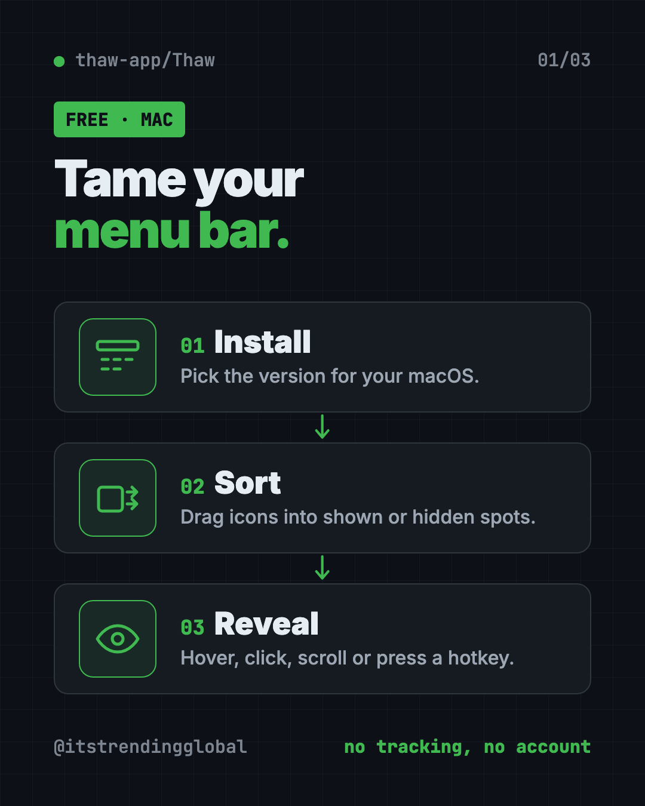
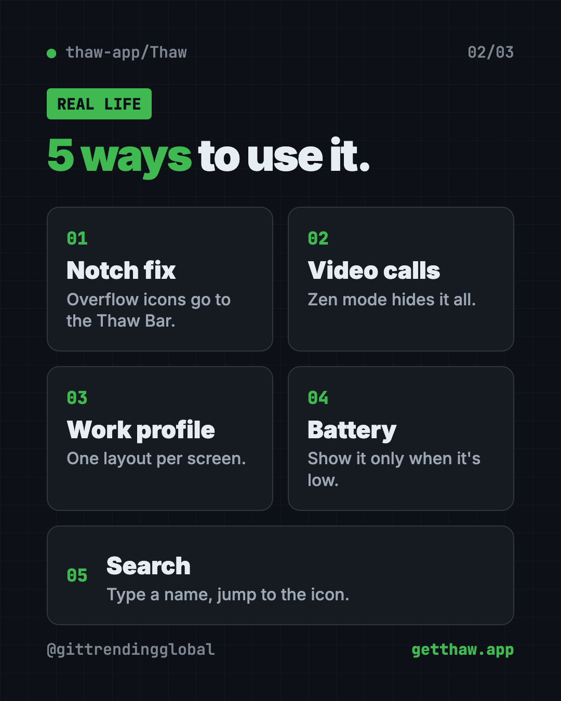
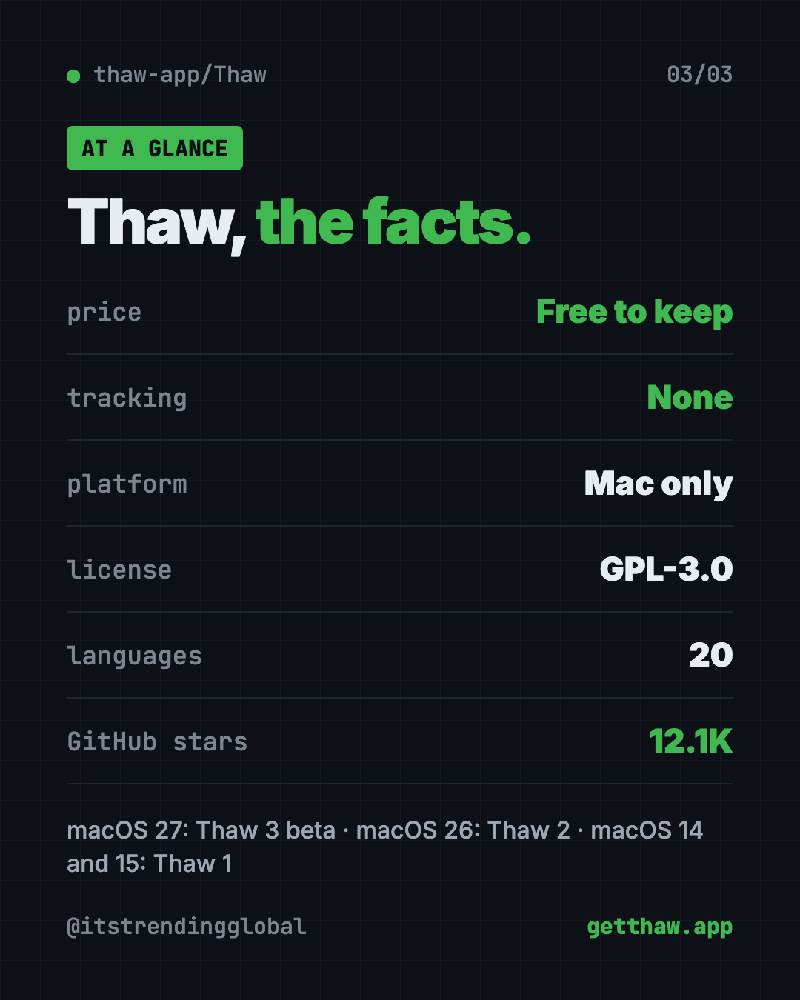

Thaw: Free Mac Menu Bar Manager, No Tracking (2026 Guide)
- Published 15 Oct 2026
- Updated 16 Oct 2026
- 7 min read
- License GPL-3.0
- By the ITG Now team
Thaw is a free Mac menu bar manager that hides the icons you don't need and lets you find any of them with a keystroke. It's open source, has no tracking, and needs no account.
Here's what it does, real ways to use it, how to install the right version for your Mac, and a prompt that lets an AI helper do the setup.
Key takeaways
- Free, and free to keep. No purchase, no subscription, no upgrade fee.
- Hides the clutter. Tuck away icons you rarely use, and keep an "always hidden" spot for the rest.
- Notch friendly. It can show hidden icons in a separate bar, handy on MacBooks with a notch.
- Private. No analytics, no telemetry, no sign-up.
- Pick the right version. Thaw 3 is in beta for macOS 27, Thaw 2 is stable for macOS 26, and Thaw 1 covers macOS 14 and 15.
What is Thaw?
Look at the top right of your Mac screen. That strip is the menu bar. Every app you install seems to drop a tiny icon there: cloud storage, chat apps, password managers, VPNs and more.
Soon it's crowded. On a MacBook with a notch (the black cutout at the top of the screen), some icons can vanish behind it. You can't find what you need.
Thaw fixes that. Its README calls it "the open source menu bar manager for macOS" and sums it up as "take back your menu bar." It's available in 20 languages.
The project has about 12.1K stars on GitHub. Stars are like bookmarks, so plenty of Mac users are following it.

What can Thaw do?
Here are the main features, all from the README:
- Hide icons you don't need, with an extra "always hidden" section.
- Show them again your way: hover, click an empty spot, scroll, swipe or press a hotkey.
- Search your menu bar. Find and jump to any icon from the keyboard.
- Drag and drop to arrange icons in the order you want.
- Groups and spacers so related icons move together, with gaps you can size.
- The Thaw Bar. Hidden icons can appear in a separate bar below the menu bar, great for notched MacBooks.
- Style the bar with tints, gradients, shadows, borders and rounded shapes. Settings can differ for light and dark mode.
- Zen mode. One action hides everything. It can switch on by itself while you present or share your screen.
- Profiles. Save a whole layout and tie it to a screen, a desktop Space or a Focus mode.
- Triggers. Show an icon only when something happens, like low battery or joining a certain Wi-Fi network.
💡 Tip: Turn on Zen mode before a video call. Your messy menu bar stays hidden while you share your screen.
How to use Thaw (real examples)
- Tame a notched MacBook. Send overflow icons to the Thaw Bar so nothing hides behind the notch.
- Look tidy on Zoom. Let Zen mode hide every icon whenever you share your screen.
- Separate work and home. Make a "work" profile tied to your office monitor and a cleaner one for the laptop.
- Watch your battery. Use a trigger so the battery icon only shows up when it's running low.
- Find things fast. Press your search hotkey and type "VPN" instead of hunting for a tiny icon.

Is Thaw really free?
Yes. The README is plain about it: "Free, and free to keep. No purchase, no subscription, and no upgrade fee when macOS ships a new version."
It uses the GPL-3.0 open source license. That means you can read the code, build it yourself or make your own version. Releases are signed and notarized by Apple, so macOS can check they're safe.
Does Thaw track me?
No. The README says "no tracking, no account. No analytics, no telemetry, no sign-up."
Thaw asks for Accessibility permission on first launch. It needs that to move menu bar icons. On macOS 27 it also asks for Menu Bar Layout Access, which lets it read the file where macOS keeps your menu bar's order.
Screen Recording permission is optional. Hiding and moving icons work without it. Grant it only if you want live icon previews and wallpaper-matched colors.
⚠️ Heads up: If Thaw can't move an icon, check System Settings, then Privacy & Security, then Accessibility, and make sure Thaw is switched on.
Thaw at a glance
| Price | Free |
| Works offline | Yes |
| Platforms | Mac only (macOS 14 and newer) |
| License | GPL-3.0 (open source) |
| Tracking | None. No analytics, no account |
| Languages | 20 |
| Latest stable | 2.1.0 (October 14, 2026) |
| Best for | Any Mac user with a crowded menu bar |
How to install Thaw on your Mac
The right version depends on your macOS. These steps come from the Thaw README.
| Your Mac runs | What you get |
|---|---|
| macOS 27 | Thaw 3, in beta |
| macOS 26 | Thaw 2, the stable release |
| macOS 14 or 15 | Thaw 1, from the releases page |
To check your version, open the Apple menu and click About This Mac.
Install with Homebrew
Homebrew is a free app installer for Mac. Open Terminal.
On macOS 26, copy and paste this:
brew install thaw
On macOS 27, copy and paste this to get the beta:
brew install thaw@beta
Install without Homebrew
- Go to the Releases page on Thaw's GitHub.
- Download the disk image for your macOS version.
- Drag Thaw into your Applications folder.
- Open Thaw and allow Accessibility when it asks.
The project's "Getting started" guide walks through the first run. A "Frequent issues" page covers what can go wrong.
Let Claude or Codex set it up for you
Claude Code and OpenAI Codex are AI helpers that can run setup steps on your computer. You paste a request, it does the steps, and you approve each one.
Copy and paste this:
Please help me install Thaw, the free Mac menu bar manager.
1. Check which macOS version I'm running.
2. Use the Thaw README (github.com/thaw-app/Thaw) to pick the right version for my Mac.
3. Install it with Homebrew if I have it, or help me download it from the releases page.
4. Explain each step in plain words, then walk me through the Accessibility permission.
Then try asking:
Help me set up Thaw so only Wi-Fi, battery and clock stay visible.
Show me how to open Thaw's search from a Terminal command using its thaw:// links.
Thaw can't move my icons. Walk me through checking its permissions.
That second prompt works because every core Thaw action has a thaw:// link. It also has an official Raycast extension and works with Shortcuts and Siri.
Our take
Thaw does one job and does it well. If your menu bar is a mess, it's one of the easiest free fixes for a Mac.
What we like:
- Truly free, with a promise of no upgrade fees.
- No tracking and no account.
- The Thaw Bar is a real help on notched MacBooks.
- Zen mode for clean screen sharing.
- Works with Raycast, Shortcuts and Siri.
What to watch for:
- Mac only.
- Different macOS versions need different Thaw versions.
- Thaw 3 for macOS 27 is still in beta.
- Some triggers are switched off by default, and a few are marked experimental.
Cleaning up your Mac is a good day's work. Next, free up disk space with Mole, a free way to deep-clean your Mac, or try PureMac. Want a free photo editor that feels at home on macOS? Read our Compositor guide.

FAQ
Is Thaw a free Mac menu bar manager?
Yes. Thaw is free and open source under GPL-3.0. The README promises no purchase, no subscription and no upgrade fee.
Does Thaw work on my MacBook with a notch?
Yes. Thaw can show hidden icons in a separate Thaw Bar, so they don't get lost behind the notch.
Which macOS versions does Thaw support?
Thaw 3 (beta) is for macOS 27, Thaw 2 is for macOS 26, and Thaw 1 is for macOS 14 and 15.
Does Thaw need Screen Recording permission?
No, it's optional. Hiding and moving icons work without it. It only adds live previews and wallpaper-based colors.
Does Thaw collect my data?
No. The README says there are no analytics, no telemetry and no sign-up.
Get Thaw: github.com/thaw-app/Thaw
Keep reading

VoiceStudio: Free ElevenLabs Alternative
VoiceStudio is a free ElevenLabs alternative. Clone a voice, dub videos and turn text into speech on your own Mac, Windows or Linux computer.

Folia: Free Animated Lyrics Music Player
Folia is a free animated lyrics music player that shows full-screen moving lyrics for your local music, Navidrome and more. What it does and how to start.

net-merge: Combine Wi-Fi and Phone Internet, Free
net-merge is a free app to use two internet connections at once, like Wi-Fi plus a phone hotspot, on Windows, Mac and Linux. No account or VPN.